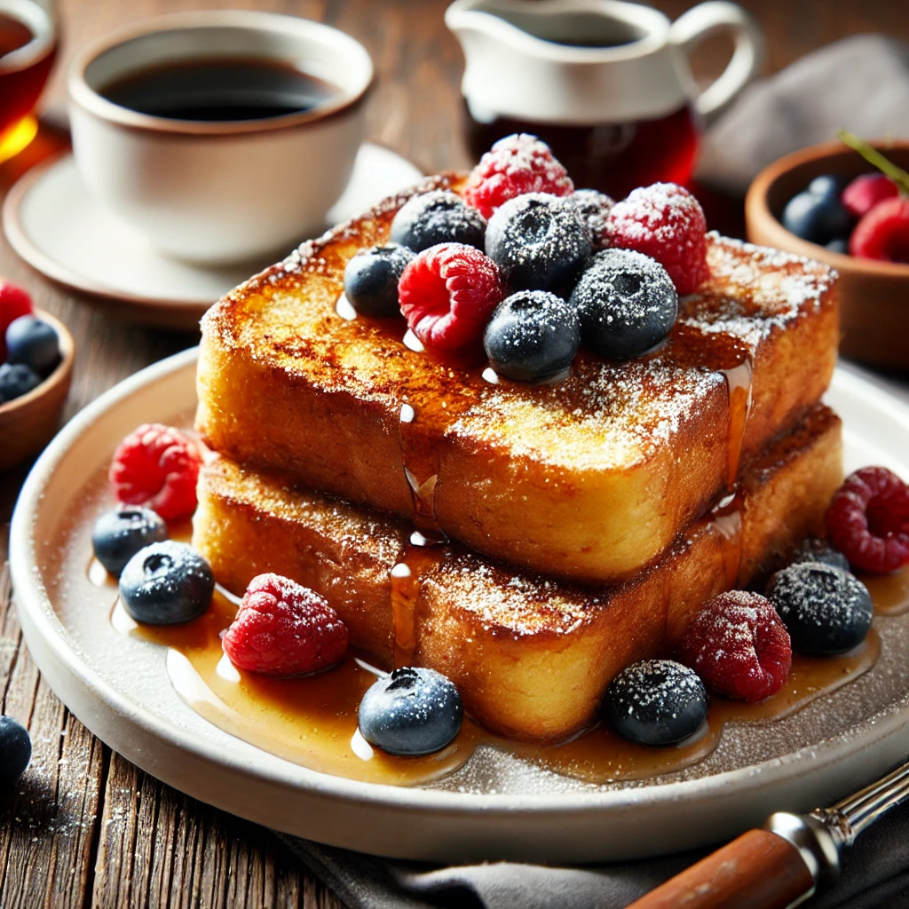

Classic French Toast
Home

Description
French Toast is a breakfast favorite that’s crispy on the outside, soft on the inside, and packed with rich, buttery flavors. Made with eggs, milk, and a hint of cinnamon, this dish is perfect with syrup, fresh fruits, or powdered sugar.
Ingredients
- 4 slices of bread
- 2 eggs/li>
- ½ cup milk
- 1 teaspoon vanilla extract
- ½ teaspoon cinnamon powder
- 1 tablespoon butter
- Maple syrup (for serving)
Steps
- Whisk eggs, milk, vanilla, and cinnamon in a bowl.
- Dip bread slices into the mixture, coating both sides.
- Heat butter in a pan over medium heat.
- Cook the bread slices for 2-3 minutes per side until golden brown.
- Serve warm with maple syrup or fruits.